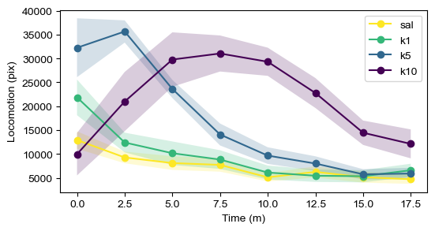
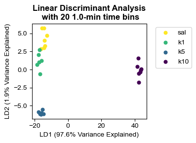
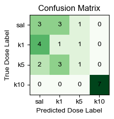
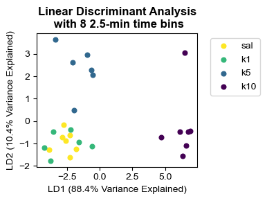
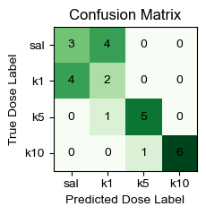
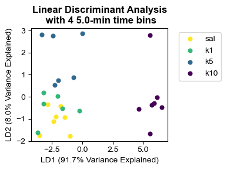
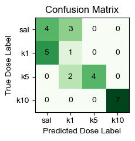
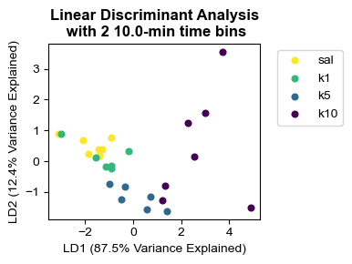
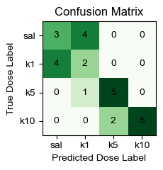

Demo 2: Scalar locomotion data from DeepLabCut
Import dependencies
# #set up paths
import importlib
import os
import sys
import matplotlib.pyplot as plt
# #This block only important for running as script
# script_dir = os.path.dirname(os.path.abspath(__file__))
# mariposa_dir = os.path.dirname(script_dir)
# utils_dir = os.path.join(mariposa_dir, 'utils')
# sys.path.append(utils_dir)
# sys.path.append(mariposa_dir)
#import utils
from utils import analysis, plot, metadata
importlib.reload(analysis)
importlib.reload(plot)
importlib.reload(metadata)
---------------------------------------------------------------------------
ModuleNotFoundError Traceback (most recent call last)
/var/folders/v1/8qlykyv97dbb5jhzq44rpdh80000gn/T/ipykernel_90234/2906842752.py in <module>
13
14 #import utils
---> 15 from utils import analysis, plot, metadata
16
17 importlib.reload(analysis)
ModuleNotFoundError: No module named 'utils'
Load config
config_path="/Users/snewbank/Behavior/MARIPOSA_test/240605_240605_BSOID-test/config.yaml"
save_path="/Users/snewbank/Behavior/MARIPOSA_test/240605_240605_BSOID-test/demo/"
save=False
#Load config
config = metadata.load_project(config_path)
path="/Users/snewbank/Behavior/B-SOID-Analysis/23-09-02-ketdr-csvs/"
config_path="/Users/snewbank/Behavior/MARIPOSA_test/240605_240605_BSOID-test/DLC_config.yaml"
make_config=False
if make_config==True:
DLC_config = metadata.make_dlc_config(path,fps=30,config=config)
else:
DLC_config=metadata.load_project(config_path)
thresh=70
fps=30
start=0
end=20*60
binsize=int(2.5*60)
selected_subgroups="all"
dist_df = analysis.dist_df_subgroups(DLC_config, binsize, start, end, thresh=70, selected_subgroups="all")
fig = plot.plot_dist_bins(dist_df, cmap="viridis_r", plottype="band")
fig

thresh=70
fps=30
start=0
end=20*60
selected_subgroups="all"
binsizes=[int(1*60),int(2.5*60),int(5*60),int(5*60),int(10*60)]
for binsize in binsizes:
dist_df = analysis.dist_df_subgroups(DLC_config, binsize, start, end, thresh=70, selected_subgroups="all")
lda, lda_embeddings, dist_counts, group_labels, group_dict, nbins = analysis.lda_loco_labels_timebins(config, dist_df, ncomponents=2)
plot.plot_lda(config, lda, lda_embeddings, group_labels, nbins, binsize,cmap="viridis_r")
confusion, class_num, class_labels, accuracy = analysis.loocv_conf_mat(lda, dist_counts, group_labels, group_dict)
plot.plot_conf_mat(confusion, class_num, class_labels, figW=2.5,figH=2.5,cmap="Greens",alt_title=False)
print("Binsize " + str(binsize) +" accuracy: " + str(accuracy))
The overall accuracy by leave-one-out-cross-validation (LOOCV) is 0.46153846153846156
Binsize 60 accuracy: 0.46153846153846156
The overall accuracy by leave-one-out-cross-validation (LOOCV) is 0.6153846153846154
Binsize 150 accuracy: 0.6153846153846154
The overall accuracy by leave-one-out-cross-validation (LOOCV) is 0.6153846153846154
Binsize 300 accuracy: 0.6153846153846154
The overall accuracy by leave-one-out-cross-validation (LOOCV) is 0.6153846153846154
Binsize 300 accuracy: 0.6153846153846154
The overall accuracy by leave-one-out-cross-validation (LOOCV) is 0.5769230769230769
Binsize 600 accuracy: 0.5769230769230769







